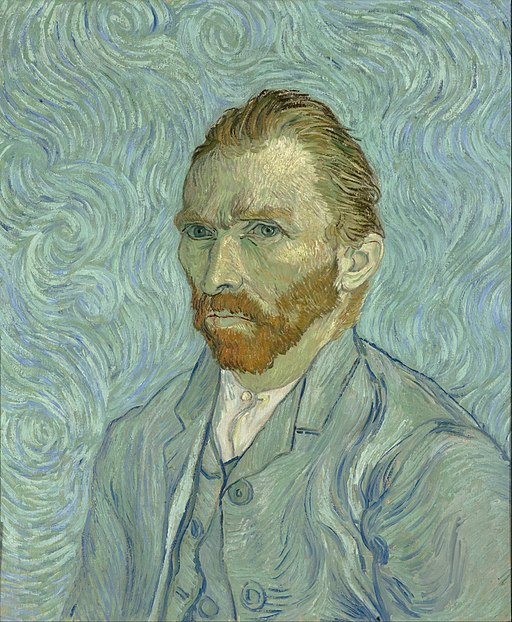

<head>
<meta charset="UTF-8" />
<meta name="keywords" content="drawing, painting" />
<meta name="description" content="drawings by Sunjy" />
<title>Sunjy</title>
<link rel="shortcut icon" type="image/x-icon" href="../../mImages/mCommon/favicon.ico" media="screen" />
<link rel="stylesheet" type="text/css" href="../../mCsses/mCommon/mCssA.css" />
<link rel="stylesheet" type="text/css" href="../../mCsses/mCommon/mCssB.css" />
<link rel="stylesheet" type="text/css" href="../../mCsses/mCommon/mCssC.css" />
<link rel="stylesheet" type="text/css" href="../../mCsses/mCommon/mCssD.css" />
<link rel="stylesheet" type="text/css" href="../../mCsses/mContent/mCssA.css" />
<link rel="stylesheet" type="text/css" href="../../mCsses/mContent/mCssB.css" />
<link rel="stylesheet" type="text/css" href="../../mCsses/mContent/mCssC.css" />
<link rel="stylesheet" type="text/css" href="../../mCsses/mContent/mCssD.css" />
</head>
<script type="text/javascript" src="../../mScripts/mContent/mContentAA.js" /></script>
<script type="text/javascript" src="../../mScripts/mContent/mContentAB.js" /></script>
<script type="text/javascript" src="../../mScripts/mContent/mContentAC.js" /></script>
<script type="text/javascript" src="../../mScripts/mContent/mContentAD.js" /></script>
<script type="text/javascript"></script> 
<script type="text/javascript">
document.write('<div class="mImgAbsolute"></div>');
/*
document.write('<p class="mFontSizeBColor" />From a white paper...</p>');
document.write('<table class="center"><tr><td>');
document.write('');
document.write('</td></tr></table>');
*/
</script>


<script type="text/javascript">
document.write('<p class="mFontSizeBColor" />Self Portrait </p>');
document.write('<p class="mFontSizeSColor" />“Self Portrait” by Vincent van Gogh is one of the dozens of self-portraits he made, and they were an essential part of the body of work as a painter.<br><br>Van Gogh painted over 30 self-portraits placing him among the most prolific self portraitists of all time. Van Gogh used portrait painting as a method of introspection and a way of developing his skills as an artist.<br><br>Van Gogh painted this self-portrait in the winter of 1887, after living in Paris for nearly two years. During his time in Paris, he devoted himself to studying the dotted Pointillist technique, and he taught himself to apply it in his unique way.<br><br>In this self-portrait, he used brush strokes running in orchestrated directions to create a self-portrait with a halo-like circle round his head. This variation of Pointillist and the effect it produced was Van Gogh’s unique contribution to a new style of painting.<br><br>The painting is also one of Van Gogh’s color experiments, where he placed complementary colors along one another using long dash-type brushstrokes. He used blue and orange in the background and red and green in the beard.<br><br>This approach intensified color contrast. Today, over one-hundred years later,  the red pigment has started fading, so the purple strokes are now blue, which means the contrast with the yellow is also less powerful.<br><br>Vincent van Gogh<br><br>Vincent Willem van Gogh is among the most famous and influential figures in the history of Western art. Van Gogh was unsuccessful during his lifetime and was considered a madman and a failure. <br><br>He created about 2,100 artworks, including around 860 oil paintings, most of them in the last two years of his life. They were characterized by bold colors and dramatic, impulsive, and expressive brushwork that contributed to the foundations of modern art.<br><br>Facts about Vincent van Gogh<br>•Van Gogh was born in the Netherlands<br>•Initially, van Gogh planned to be a pastor and worked as a lay preacher in Belgium. It was only on being let go from this job that he decided that his future lay in painting.<br>•Van Gogh didn’t start painting until he was 27 years old.<br>•Van Gogh never received any formal art training.<br>•Van Gogh’s brother, Theo, worked in an art gallery and introduced van Gogh to many artworks.<br>•Van Gogh visited many parts of Europe including the Netherlands, France, Belgium, and England.<br>•Japanese woodblock prints profoundly influenced Van Gogh. He collected pictures of Japanese woodblock prints, and he practiced making copies.<br>•Van Gogh had several close relationships with many fellow artists, including Paul Gaugin and Emile Bernard.<br>•Van Gogh’s artistic career was only ten years.<br>•Van Gogh was a prolific letter writer, especially to his brother.<br>•He created over 900 paintings plus many more drawings and sketches.<br>•He died at the age of 37<br>•As a poor artist, van Gogh didn’t have money to pay for models, so he painted himself instead. He created hundreds of self-portraits.<br>•Van Gogh considered himself and many of his paintings to be failures.<br>•Van Gogh cut off his own ear in 1888.<br>•Experts believe that that Gaugin cut off Van Gogh’s ear, following a violent dispute and that they both conspired to blame it on van Gogh so that Gaugin would not be jailed.<br>•Van Gogh wrapped up his removed ear and gave it to a prostitute in a nearby brothel.<br>•Van Gogh suffered mental health challenges for many years, and in 1889 he voluntarily admitted himself to a psychiatric hospital in Saint-Rémy.<br>•Van Gogh spent a year in the hospital, from which he created some of his most well-known paintings.<br>•Van Gogh spent his adult life in poverty, surviving on cheap food. His diet consisted mainly of bread and coffee; he drank alcohol excessively and always had his pipe in hand.<br>•After leaving the asylum, Van Gogh’s mental health continued to deteriorate, and in 1890, he shot himself in the chest. He died two days later.<br>•There is speculation that Van Gogh did not shoot himself but that he was shot in a prank that went wrong. Van Gogh protected the identity of who shot him, by claiming that he shot himself.<br>•Only 37 years old when he died, he had just sold one painting in his lifetime.<br>•On his deathbed, van Gogh’s last words to his brother were, “the sadness will last forever.”<br>•Van Gogh’s brother died very soon after Van Gogh’s death.<br></p>');
document.write('<table class="center" /><tr><td>');
document.write('<br>Van Gogh painted over 30 self-portraits placing him among the most prolific self portraitists of all time. Van Gogh used portrait painting as a method of introspection and a way of developing his skills as an artist.<br><br>Van Gogh painted this self-portrait in the winter of 1887, after living in Paris for nearly two years. During his time in Paris, he devoted himself to studying the dotted Pointillist technique, and he taught himself to apply it in his unique way.<br><br>In this self-portrait, he used brush strokes running in orchestrated directions to create a self-portrait with a halo-like circle round his head. This variation of Pointillist and the effect it produced was Van Gogh’s unique contribution to a new style of painting.<br><br>The painting is also one of Van Gogh’s color experiments, where he placed complementary colors along one another using long dash-type brushstrokes. He used blue and orange in the background and red and green in the beard.<br><br>This approach intensified color contrast. Today, over one-hundred years later,  the red pigment has started fading, so the purple strokes are now blue, which means the contrast with the yellow is also less powerful.<br><br>Vincent van Gogh<br><br>Vincent Willem van Gogh is among the most famous and influential figures in the history of Western art. Van Gogh was unsuccessful during his lifetime and was considered a madman and a failure. <br><br>He created about 2,100 artworks, including around 860 oil paintings, most of them in the last two years of his life. They were characterized by bold colors and dramatic, impulsive, and expressive brushwork that contributed to the foundations of modern art.<br><br>Facts about Vincent van Gogh<br>•Van Gogh was born in the Netherlands<br>•Initially, van Gogh planned to be a pastor and worked as a lay preacher in Belgium. It was only on being let go from this job that he decided that his future lay in painting.<br>•Van Gogh didn’t start painting until he was 27 years old.<br>•Van Gogh never received any formal art training.<br>•Van Gogh’s brother, Theo, worked in an art gallery and introduced van Gogh to many artworks.<br>•Van Gogh visited many parts of Europe including the Netherlands, France, Belgium, and England.<br>•Japanese woodblock prints profoundly influenced Van Gogh. He collected pictures of Japanese woodblock prints, and he practiced making copies.<br>•Van Gogh had several close relationships with many fellow artists, including Paul Gaugin and Emile Bernard.<br>•Van Gogh’s artistic career was only ten years.<br>•Van Gogh was a prolific letter writer, especially to his brother.<br>•He created over 900 paintings plus many more drawings and sketches.<br>•He died at the age of 37<br>•As a poor artist, van Gogh didn’t have money to pay for models, so he painted himself instead. He created hundreds of self-portraits.<br>•Van Gogh considered himself and many of his paintings to be failures.<br>•Van Gogh cut off his own ear in 1888.<br>•Experts believe that that Gaugin cut off Van Gogh’s ear, following a violent dispute and that they both conspired to blame it on van Gogh so that Gaugin would not be jailed.<br>•Van Gogh wrapped up his removed ear and gave it to a prostitute in a nearby brothel.<br>•Van Gogh suffered mental health challenges for many years, and in 1889 he voluntarily admitted himself to a psychiatric hospital in Saint-Rémy.<br>•Van Gogh spent a year in the hospital, from which he created some of his most well-known paintings.<br>•Van Gogh spent his adult life in poverty, surviving on cheap food. His diet consisted mainly of bread and coffee; he drank alcohol excessively and always had his pipe in hand.<br>•After leaving the asylum, Van Gogh’s mental health continued to deteriorate, and in 1890, he shot himself in the chest. He died two days later.<br>•There is speculation that Van Gogh did not shoot himself but that he was shot in a prank that went wrong. Van Gogh protected the identity of who shot him, by claiming that he shot himself.<br>•Only 37 years old when he died, he had just sold one painting in his lifetime.<br>•On his deathbed, van Gogh’s last words to his brother were, “the sadness will last forever.”<br>•Van Gogh’s brother died very soon after Van Gogh’s death.<br>" />');
document.write('</td></tr></table>');
</script>


